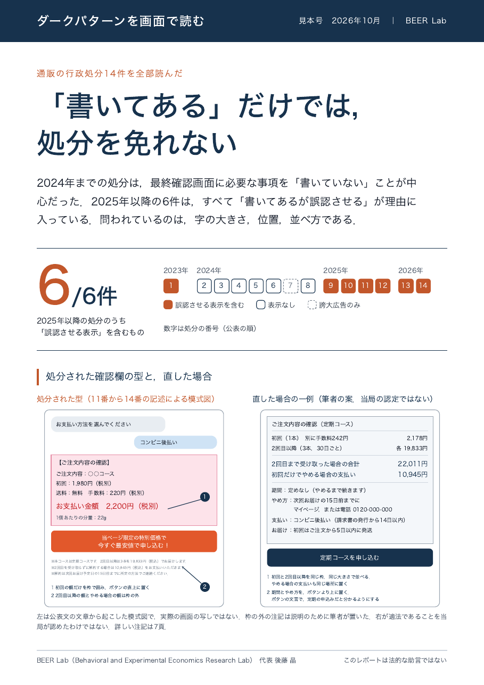
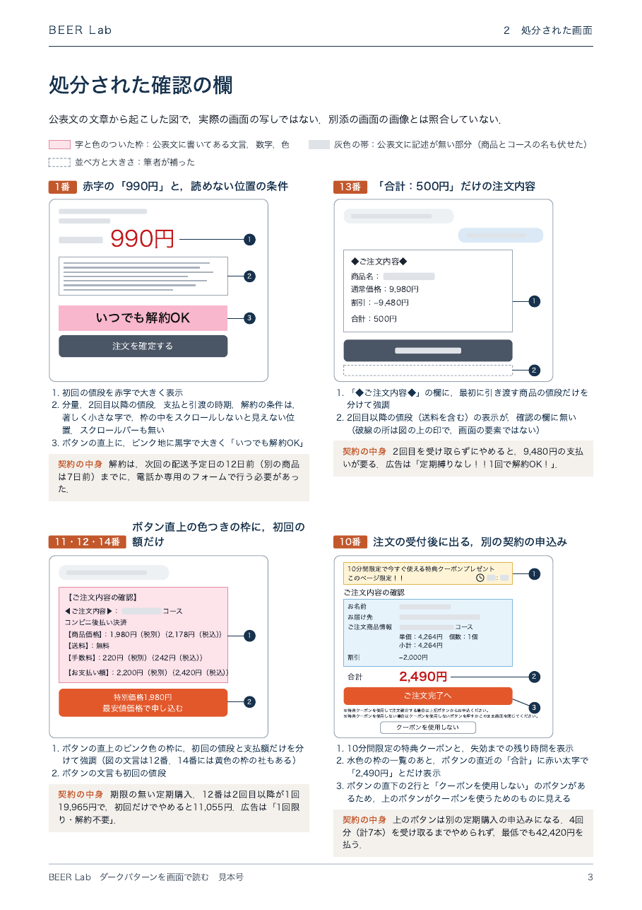

BEER Lab は，その研究と，処分や規制の資料を読み，自社の画面や手続きで何を確かめればよいかを，作る側の方と一緒に考えます．
中身と条件は，ご事情を伺ってから決めます．まずはメールでご相談ください．
毎号，手口の類型を1つ取り上げます．行政の処分と事例を画面の図に起こし，規制の動き，研究の結果，自社で確かめる点を同じ型で並べます．
隔月，4〜6頁の PDF．見本号はメールでお送りします．
下のテーマから，聞き手に合わせて組み立てます．自社の画面や文書を持ち寄って点検する演習の回も作れます．
60分の講演から1日の研修まで．オンライン可．
月に1〜2回の打ち合わせと，資料への意見．新しい画面や施策を考える段階で，研究と処分例から，先に確かめておく点をお返しします．
顧問としての契約もできます．1回だけのご質問もお受けします．
「この施策に効果のエビデンスはあるか」という問いに，論文を調べて2〜4頁でお答えします．分かっていること，分かっていないこと，読むときの注意を分けて書きます．
納期はご相談ください．
表示や手順の違いで人の理解と行動がどう変わるかを，調査や実験で測ります．アンケートや A/B テストを，結論を誤らない形で組むご相談もお受けします．
行動経済学と心理学に関わる記事，教材，社内資料の内容を確かめます．
共同研究は，所属大学を通じた契約になります．


処分の公表文は，文章で画面を説明しています．それを図に起こすと，何が問われたのかが一目で分かります．見本号では，通信販売の行政処分14件を全部読み，処分された確認の欄を図にしました．
下記は一例です．行動経済学に関わるテーマ全般について，ご相談に応じます．
利用者を欺く画面設計とは何か．国内外の規制の動向と，信頼を損なわない画面づくりの考え方．
値付け，選択肢の見せ方，定期購入や解約の設計．買い手がどう感じ，どう選ぶかを実験の知見から考えます．
健康，環境，行政手続き．手続きの負担（スラッジ）を減らし，望ましい行動を後押しする設計と，効果の確かめ方．
損失回避，現在バイアス，アンカリング．人の判断の癖を，自社の商品・業務の場面に引きつけてお話しします．行動経済学の入門にも．
人はAIの助言をどこまで信じるのか．AIに任せると判断はどう変わるのか．人とAIを同じ場で比べる実験の知見から．
評価や報酬は人をどう動かすのか．協力，公平感，やる気をそぐ仕組みについて．
アンケートや A/B テストの組み方．AIに回答させる調査の使いどころと限界．
人がなぜその選択をするのかを，実験とデータで確かめてきました．専門は行動経済学，実験社会科学，計算社会科学です．ナッジとダークパターンの実験，経済ゲームの実験，AI と人の相互作用を研究しています．
経歴と業績は，研究者としての頁へメールで，ご所属，ご相談の内容，ご希望の時期をお知らせください．内容を確認のうえ，お引き受けの可否と条件をご連絡します．お引き受けは，所属大学の規程に沿って行います．